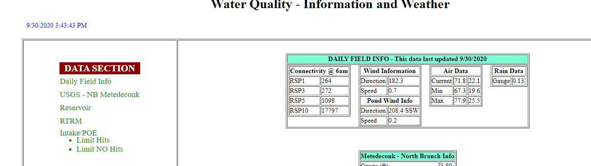

Back
Intranet Data Pages
This project was personally spearheaded after seeing inefficiency in daily data gathering. The goal of this project was to provide an intranet page for the company that would be able to provide company members with data from both internal and external sources, calculating values where needed and saving employees time. This webpage was creating using HTML and ASP.NET in order to import and display data from multiple sources and manipulate page appearance easily. Hosting was achieved through coordination with the company IT department.